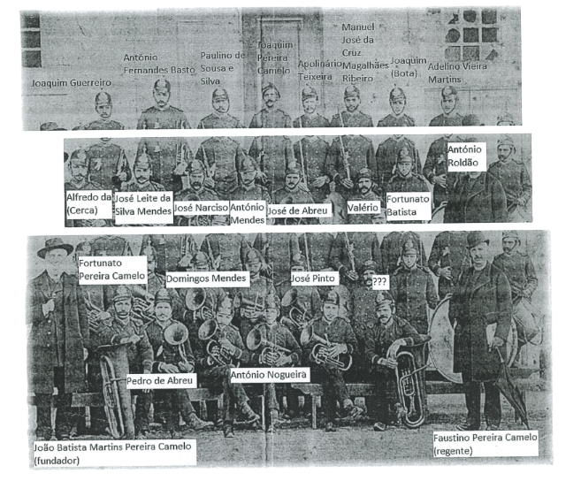

Investigações históricas recentes identificam João Baptista Martins Pereira Camelo, professor da freguesia de Abadim, como fundador desta instituição que, ao longo do século XIX, consolidou uma tradição musical que se mantém viva até aos nossos dias.
